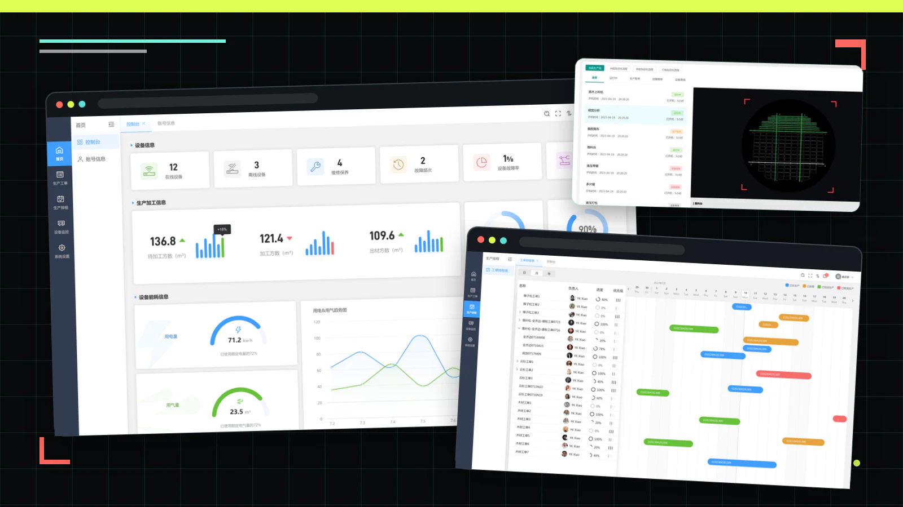
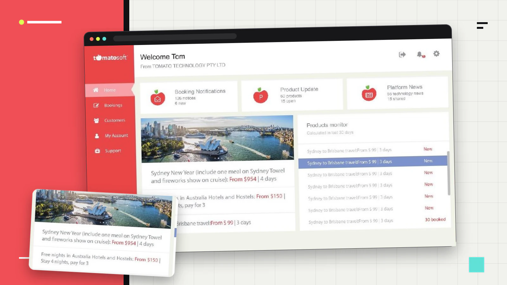
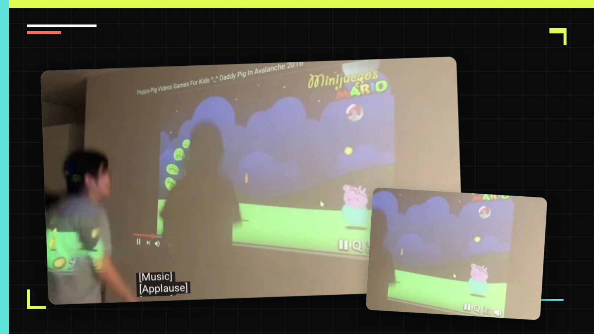
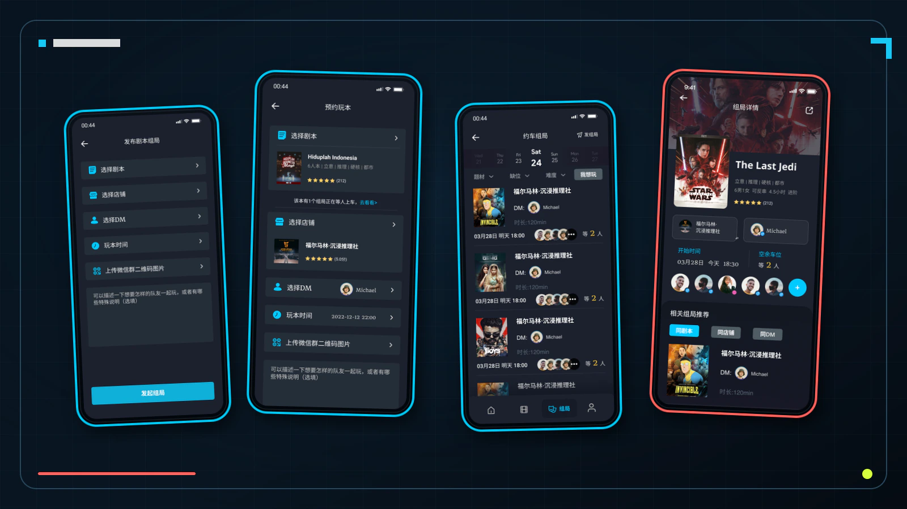
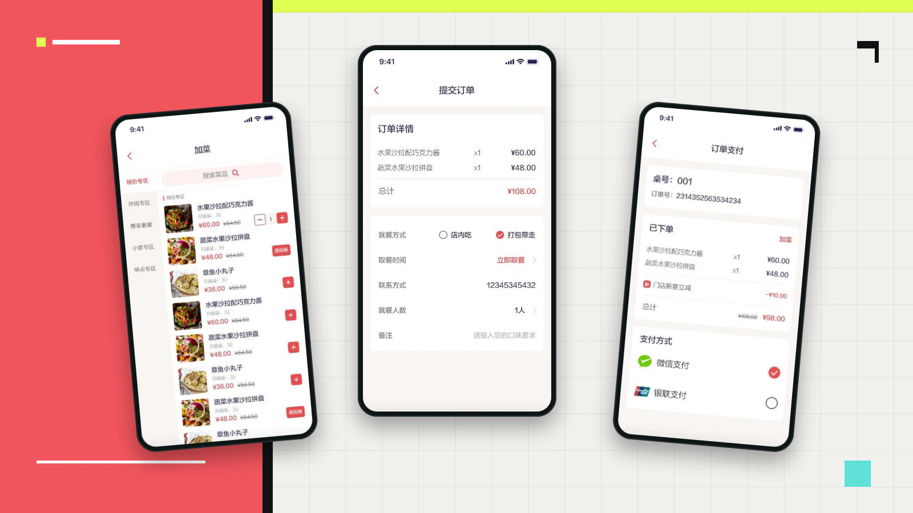

Work out the idea
I talk with people, sketch possible approaches, and decide what to try first.
DESIGNER · MAKER · RESEARCHER
Hi, I’m Liqian.
I design interfaces and build playful objects for everyday life.
01 / What I do
I like making things that people can try for themselves. A sketch or a working model often teaches me more than a long discussion about an idea.
Some of my projects live on a screen. Others have sensors, buttons, or moving parts. I’m interested in how these things fit into daily life, whether that means finding legal advice, remembering medicine, or playing with sound.
I’ve spent more than seven years designing interfaces and working on digital products. I’m now doing a PhD at the University of Technology Sydney, looking at how people understand and use AI in their homes.
I talk with people, sketch possible approaches, and decide what to try first.
I design screens and connect them so people can try an app or website before it is built.
I use electronics, sensors, and code to make objects that respond to touch, movement, or voice.
I watch people use a prototype, listen to what they find confusing, and use that feedback to improve it.
02 / Selected work
A / Research prototypes
These projects look at food, medicine, feelings, and household tasks.

A prototype for helping older adults manage medicines at home. I’m studying how it can recognise medicine, explain what it finds, and let people check or change the next step.

Squeeze it, move it, and hear it respond. Built with a team at UQ, MoodBall uses music and light to help people share a feeling with someone far away.


A prototype that pairs a food camera with an app to show what’s in storage and explain food suggestions. SeniorCare adds simpler screens and a proposed voice option for older adults.
 Design drawing / Work in progress
Design drawing / Work in progress
I’m designing a small washer you can control with buttons or spoken Chinese. The software is ready to try in a simulation; building and testing the machine comes next.
B / Apps & software
Design work for people seeking legal advice, running a factory, or managing travel bookings.
A service that helps residents reach legal advice through an app, a community screen, or a phone call. I worked on the design from the first plans through to launch.
See the project →
Software for a timber factory, bringing production schedules, orders, and equipment checks into one place so staff can see what needs attention.
See the project →
A workspace for travel teams to manage bookings, update trip details, and keep customer information together.
See the project →C / Play & everyday apps
A game you play by moving, a way to find your next mystery night, and a restaurant ordering app.

Move your body to catch cash on screen. The game uses Unity and an Arduino to turn a win into a physical reward.
Watch demo →
An app concept for finding mystery games, booking a place, and bringing a group together for a night of role play.
Open design →
Browse the menu, customise a dish, and pay for your meal. This prototype follows an order from the first choice through to checkout.
Open prototype →Full archive
Meet Animal Protector and Hi, Stranger, two earlier projects about animal care and connecting with new people.
Explore archive03 / How I work
Who is this for? What are they trying to do? I start by listening and looking at what happens today.
It might be a paper sketch, a few linked screens, or a rough object with working electronics.
I watch what people do, where they hesitate, and what they try that I didn’t expect.
I use what I’ve learned to adjust the design, then make another version to try.

04 / A bit about me
I’m a designer and PhD candidate in Computer Science at UTS in Sydney. My research asks how AI can help people look after their health at home, and how people can stay in control of the technology they use. Before my PhD, I worked in product management, interface design, public services, travel, and multimedia production.
05 / Start a conversation
I’d love to hear about it. Get in touch about a project, research, or something you’d like to make.
GitHub
github.com/liqianyouy
Sydney, Australia